01 / Overview
Project Overview
Doorway is a platform with a mission to bridge the gap in social connectivity. We aimed to create a digital space that not only encourages users to foster deeper social connections but also empowers them to take the initiative in reaching our to friends and family.
02 / Problem Statement
Problem Statement
How might we develop a space that facilitates stronger social connections and encourages taking the initiative to reach out to friends and family?
03 / Design Challenge
Design Challenge
Our project began with the aim of developing a digital space to support mental wellness among friends and family, particularly over long distances. As we progressed through the design process, insights from our research and interviews highlighted a preference among potential users for a platform centered on fostering social connections as a means to support mental wellness. This realization / feedback was pivotal, leading us to refine our focus and transition from directly addressing mental wellness issues to enhancing mental wellness indirectly through encouraging conversations and creating a social environment where users feel secure in sharing their mental health journeys.
- User Engagement: Creating a platform that users would consistently use (considering the sensitive nature of mental wellness conversations)
- Balance Functionality with Simplicity: Integrating meaningful features that promote social connectivity without overwhelming the user interface.
- Privacy: Creating a secure space for users to share comfortably without fear of judgement.
04 / Research
Interviewing
As a team we each conducted two unique interviews, totaling 10 participants. Originally, our problem statement aimed at bridging connections between individuals over long distances. However, as we engaged in conversations with our friends, family, and peers, the focus of our discussions naturally shifted form long-distance connections to more immediate concerns surrounding personal well-being.
- “I wish there was a way for people to reach out for me to see that I’m just sitting online on my phone so I can know I can tap into them and they’re active and available”
- “A person to listen to my struggles was a good example of support. Someone to just be there for me so I didn't feel alone and empathize with me.”
- “[When] we’re at a level where we can be vulnerable with each other … it makes me feel like I can share my stories and emotions at that moment. It connects our souls”
- “I’m rarely the one to reach out first…usually wait for someone to text first”
- “[I] don't want to drain others with personal feelings all the time”
05 / Affinity Diagram
Affinity Diagram
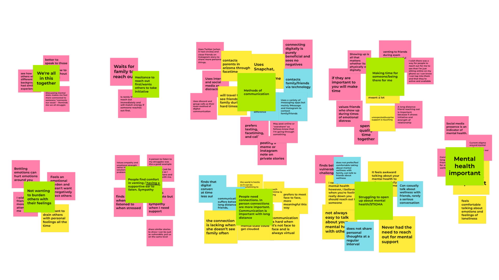
In order to get a better understanding of the problem, we turned to an affinity diagram to collate and analyze the insights gathered from each of our interviews. This method allowed us to visually organize the data and identify common themes and ideas that emerged across participants feedback. We uncovered overarching themes that resonated with our user base:
- Value of Support in Stressful Times: Support during high-pressure or stressful times is appreciated
- Listening and “just being there”
- Reciprocated Support: We discovered that individuals are more inclined to engage and reciprocate support when someone reaches out first. This insight points to the importance of designing features that encourage proactive outreach among users.
- It’s impactful when a loved one takes the initiative to offer support
Reflecting on the interview process, it became clear that our project needed a shift in direction. The initial focus on bridging connections between long-distance friends and family didn’t address the broader issue of mental wellness. Shifting our aim towards enhancing mental well-being through improved social interactions became a clearer more impactful goal.
06 / Design Phase
Design Phase
Creating user personas helped us visualize our target users' needs and behaviors, guiding the development of storyboards that illustrated potential user interactions with our app.
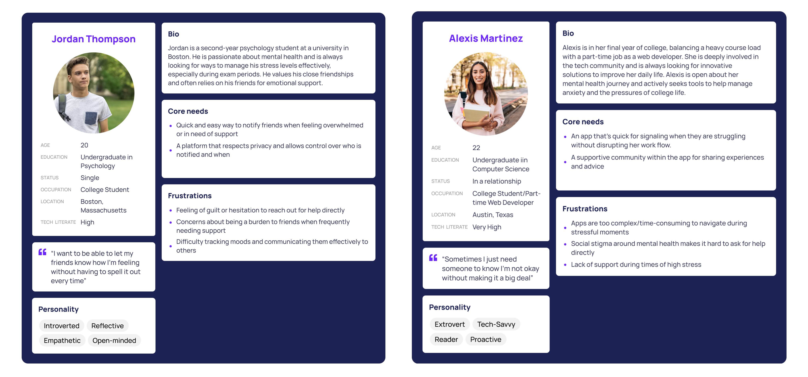
Our design phase was iterative, anchored by the insights gathered from user feedback. We transitioned from low-fidelity paper sketches, which laid out the basic structure and flow of our app, to mid-fidelity prototypes that introduced functional elements and interaction design, to a high-fidelity prototype that polished the interface.
- Low-fidelity Paper Sketches
- Mid-fidelity Prototype
- High-fidelity Prototype
07 / Paper Sketches
Paper Sketches
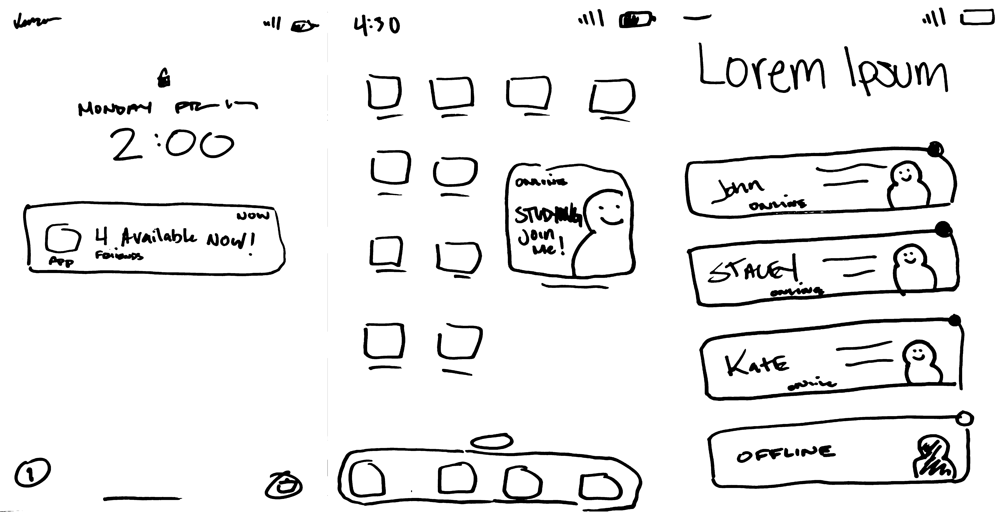
At this stage, our design was heavily inspired by social apps such as Locket, which we covered in our competitive analysis.
- Lock screen Notifications: The notification informs users about their social circles presence without opening the app, which helps foster more spontaneous conversations and create an environment that supports talking.
- Widgets: This concept introduces a personalized widget that seamlessly integrates with your smartphone's home screen, offering a visual snapshot of your friends' current activities.
- Home Page: The home screen was designed to streamline social interactions by displaying contacts with clear indicators of their availability. At a glance, users can see who is online with green dots for available friends and grey dots for those currently unavailable.
08 / Wireframes
Low-fidelity Wireframes
Kaila Long and I spent hours brainstorming at school, exchanging and refining ideas until we landed on a concept that truly sparked our interest. The metaphor of 'doors' emerged as a focal point, inspiring us to develop our project around this central theme
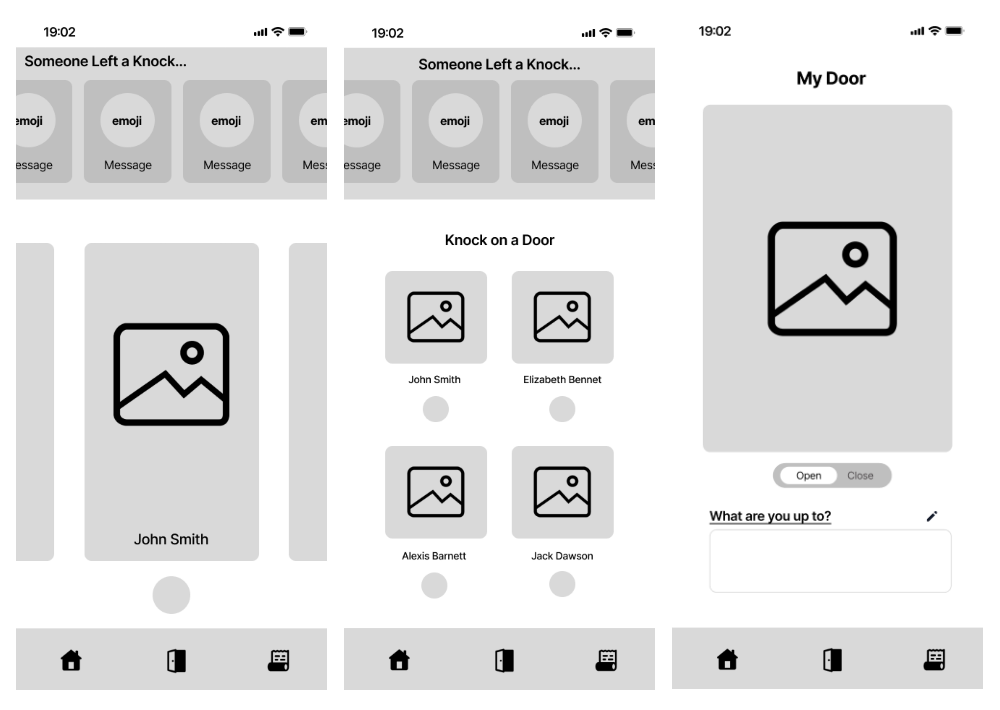
Home Page
- The landing page/home menu screen enables users to quickly see the status of their friends added to the platform. They can see their friends’ doors, as well as who has knocked/left a message on their door.
My Door
- Users will be able to customize their door to make interactions more enjoyable and light-hearted.
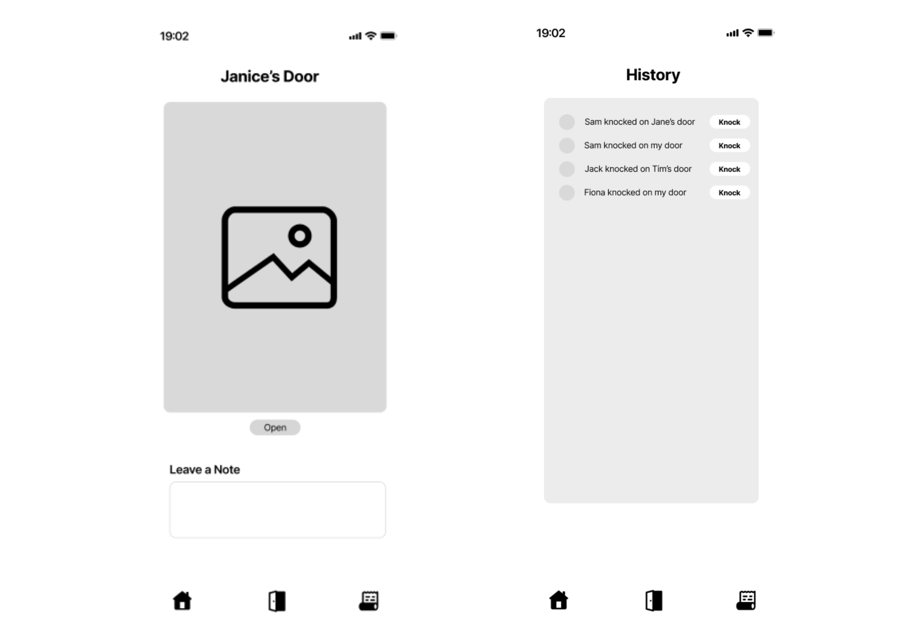
Viewing Door
- Selecting a user's doors displays the customized door of the user. They are presented with an option to knock on the door and leave a note in case they have something short to add. Users will also be shown the status of a user door via visual indicators (EX. Setting your door as “open” displays your Door ajar)
History Tab
- The history tab will allow users to see what doors their friends have knocked on. This allows users to keep better track of those who reached out to them and respond to them when they have time. It additionally serves to boost group connectivity and explore socializing based on friends' activities.
09 / High Fidelity Prototype
High Fidelity Prototype
Kaila Long played a pivotal role in developing our initial high-fidelity prototype. Her expertise in Figma helped translate the team's ideas into a workable prototype.
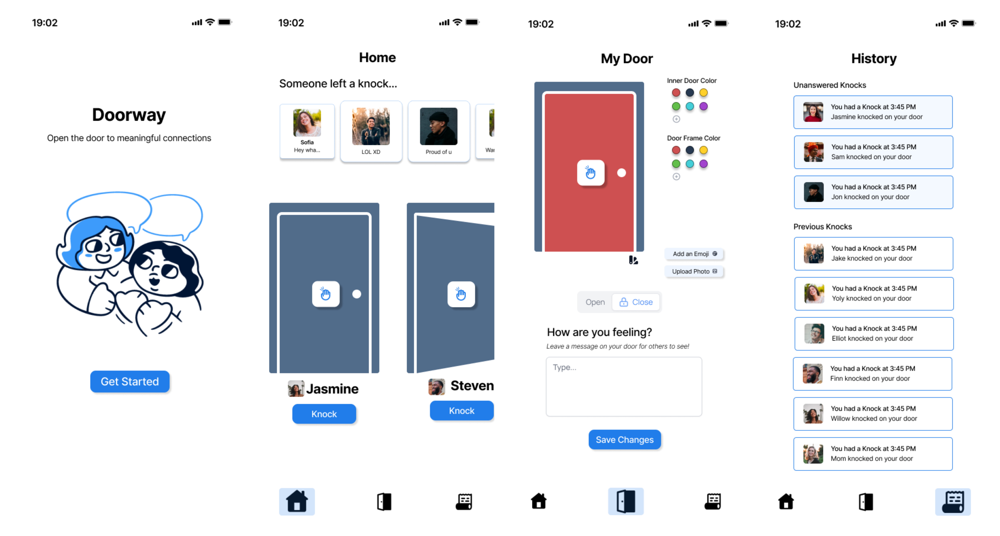
The initial prototype consisted of:
- Landing Page
- Home Page
- My Door
- History Tab
10 / Testing
Usability Evaluation
In order to refine the user experience I conducted a mini usability evaluation with my friend/roommate. I created a list of tasks such as sending a knock, viewing your door, updating your status, and responding to a knock.
Notable Findings:
- Friends List and Settings: The absence of a visible friends list and a clearly defined settings page was a critical issues.
- Visual Communication: The metaphor of 'open' versus 'closed' doors required clearer visual cues to convey their intended meaning effectively.
Proposed Adjustments:
- Notification Management: Tailoring notification behavior based on the 'door's status—offering a passive note-leaving feature for closed doors and active notifications for open doors.
- Implement a system where a closed door does not trigger notifications but allows users to see notes left by others once the app is reopened.
- Ensure an open door enables notifications to indicate active connection attempts.
- Change the interaction for a closed door
This usability evaluation was instrumental in identifying both the strengths and areas for improvement within our high-fidelity prototype. The feedback provided a clear direction for refining our interface, ensuring that future iterations will offer an even more intuitive and engaging user experience.
11 / Final Design
Final Design
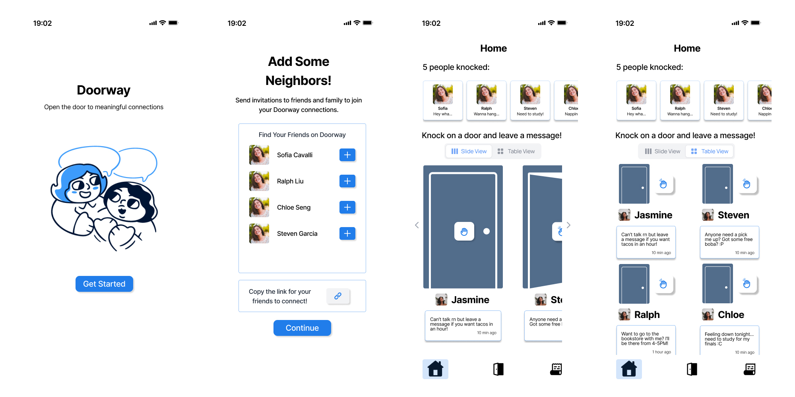
Our final design underwent significant evolution, drawing on insights from peer feedback and usability evaluations of our earlier high-fidelity prototype. A crucial addition was a screen facilitating the addition of neighbors, addressing a gap identified in the prior version. Moreover, we transformed the 'knock' function into a tangible button on the door itself, represented by a hand emoticon. This adjustment enabled us to integrate statuses directly beneath users' doors, enriching the interface with more intuitive and interactive elements.
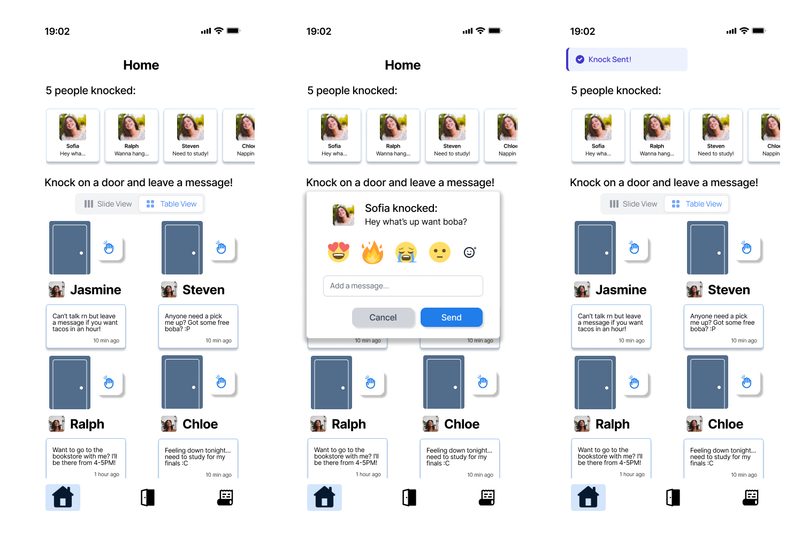
We developed an alternative viewing mode for doors, organizing them into a grid layout instead of a sliding carousel, and introduced popup menus for facilitating user interactions.
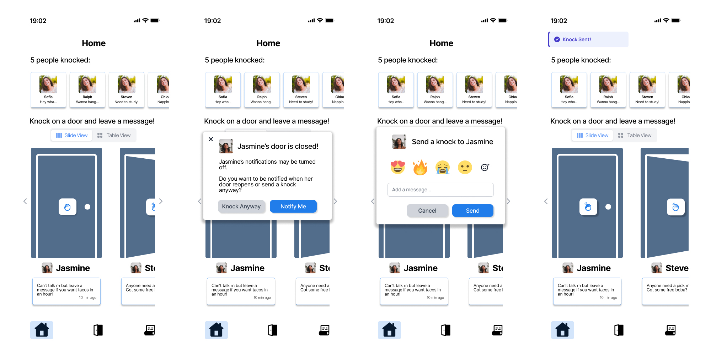
To resolve the ambiguity surrounding closed versus open doors highlighted during usability testing, we introduced an alternative popup notification. This notification informs users when a door is closed and suggests knocking later or opting to receive a notification when the door opens. This feature is designed to enhance social connectivity in a manner that is engaging yet respectful of user preferences.
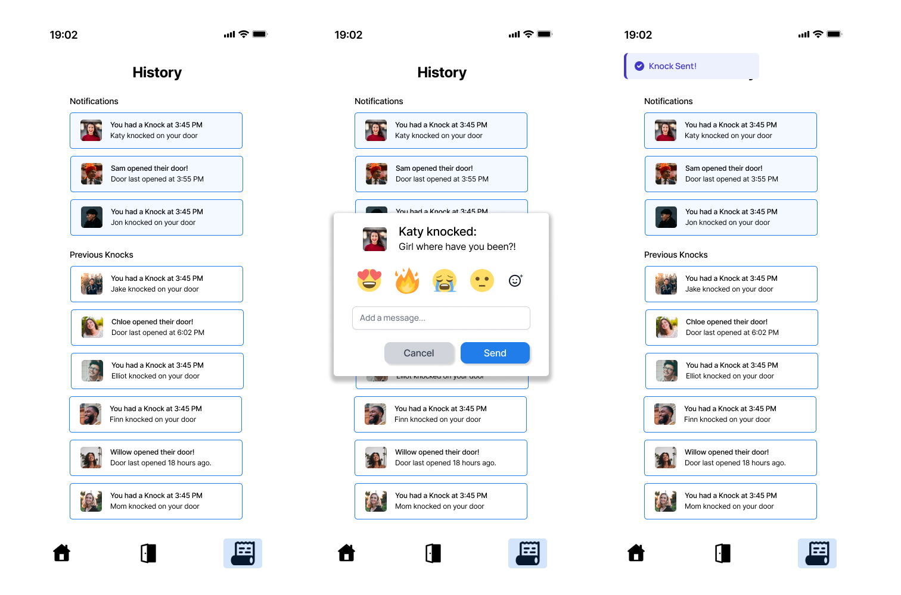
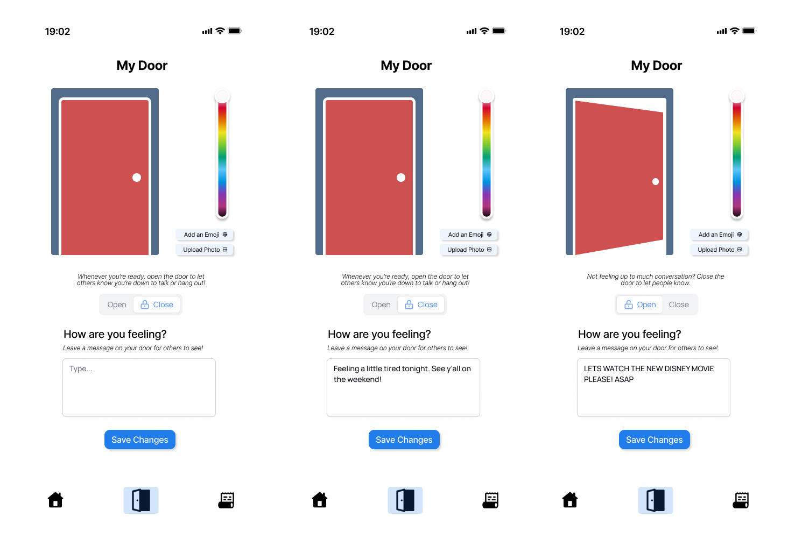
The door page offers functionality for users to open or close their door and update their status, keeping friends informed about their activities or mood. It provides customization options, including the ability to change the door's color, choose emojis, or upload personal photos for display. Additionally, the interface presents message suggestions for statuses when doors are being opened or closed.
12 / Prototype Link
Project Link
13 / Takeaways
Takeaways
Doorway taught me how quickly a project can evolve once real user feedback enters the process. What started as an idea focused on long-distance connection gradually shifted into a broader exploration of emotional availability, social pressure, and how digital spaces can encourage people to reach out more naturally.
One of the biggest takeaways from this project was learning how important iteration is within UX design. Many of our strongest ideas came after interviews, usability feedback, and redesigning interactions that initially felt unclear or overly complicated. Small details like notification behavior, door states, and interaction flow ended up having a major impact on how users interpreted the experience.
The project also strengthened my ability to collaborate within a creative team environment. Brainstorming concepts, refining metaphors, building prototypes in Figma, and continuously revisiting our design decisions made the experience feel much closer to a real product design workflow rather than a traditional class assignment.